| 状态 | ratio | cov% BASE | cov% B | Δcov | 几何 | 控制台 |
|---|---|---|---|---|---|---|
| IDLE | 1.000 | 9.18 | 9.78 | +6.5% | 正圆 | 0 |
| LISTENING | 1.0059 | 10.37 | 10.99 | +5.9% | OK | 0 |
| THINKING | 1.0173 | 12.92 | 13.72 | +6.2% | OK | 0 |
| SPEAKING | 1.0208 | 11.03 | 11.70 | +6.1% | OK | 0 |
| ERROR | 0.9884 | 11.22 | 12.04 | +7.3% | 瞬帧 | 0 |
| DONE | 1.0089 | 11.40 | 11.95 | +4.8% | 瞬帧 | 0 |







